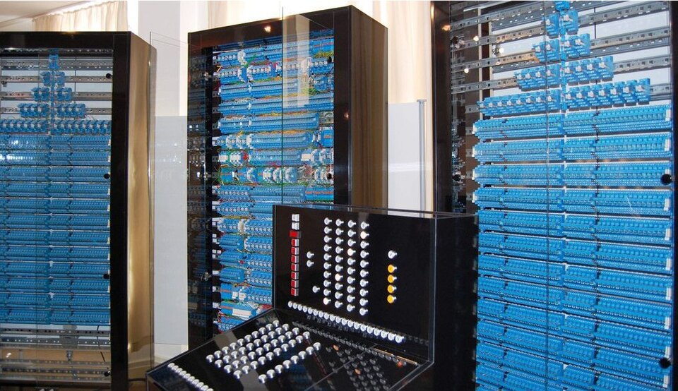
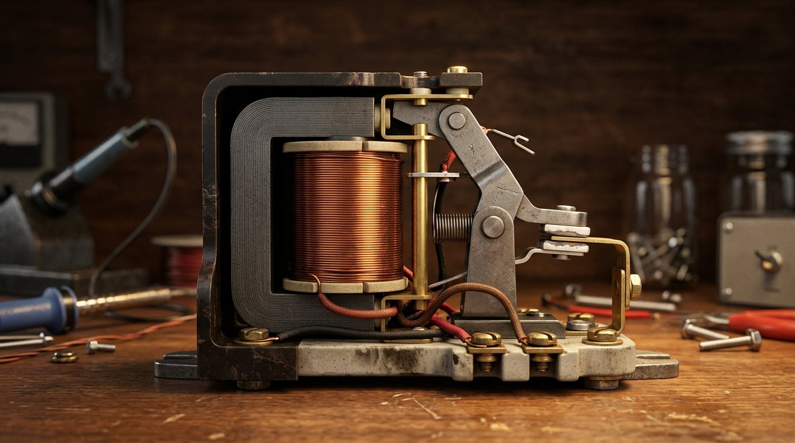
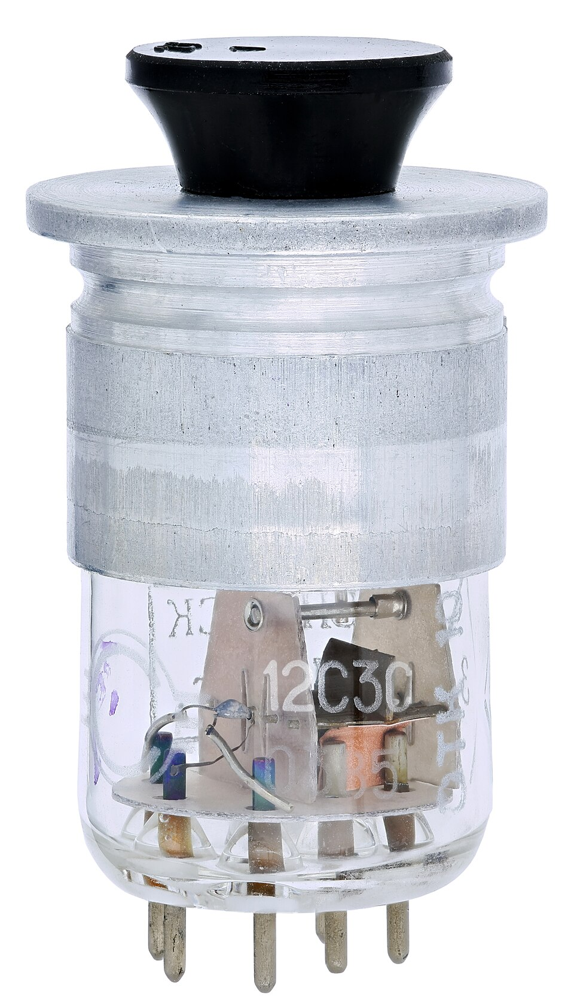
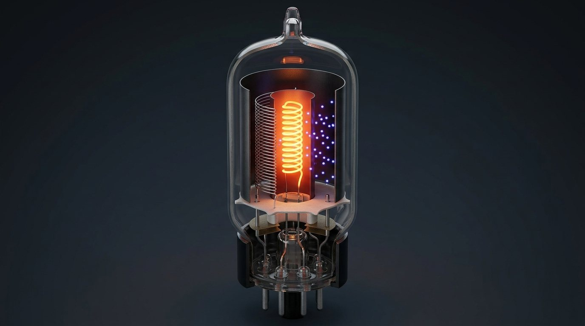
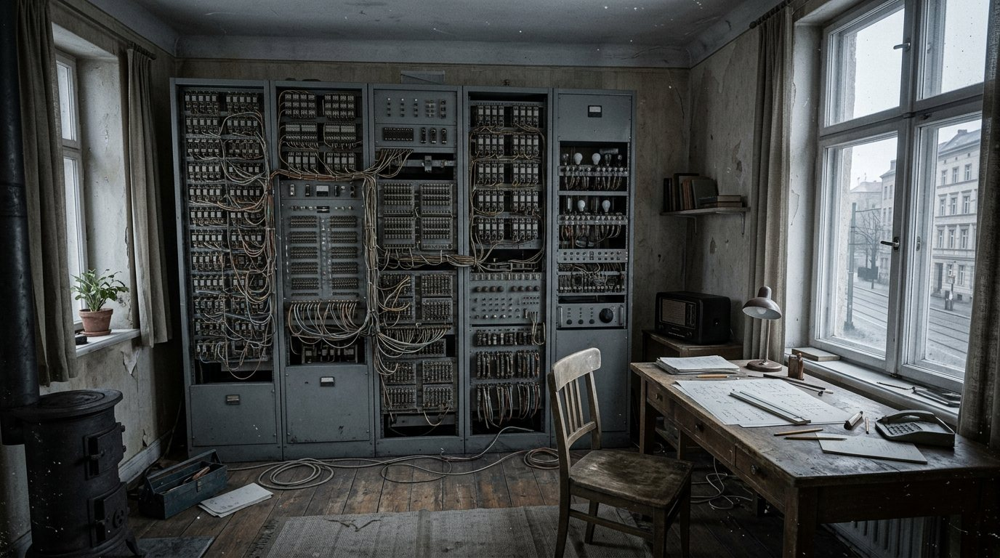
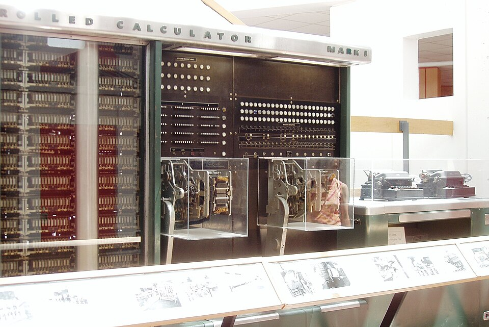
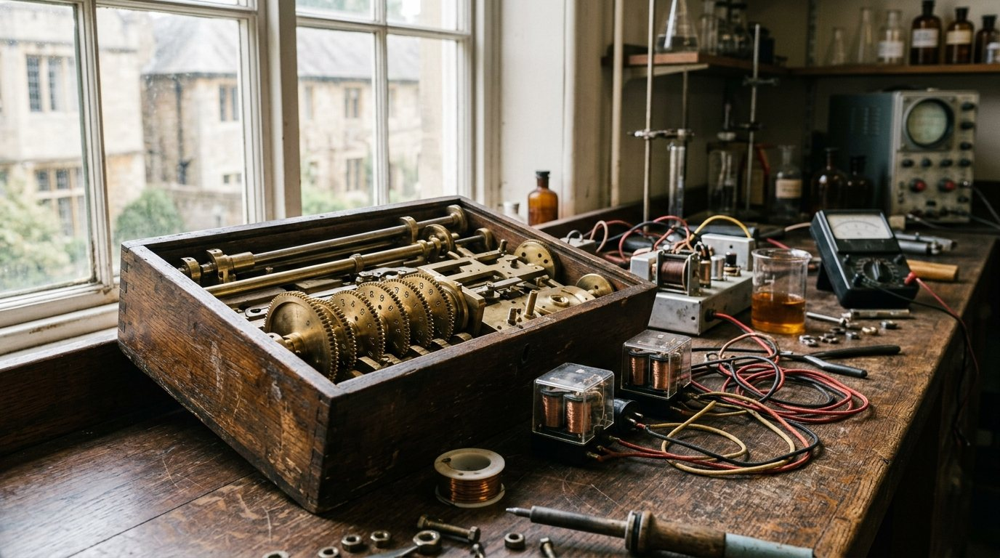
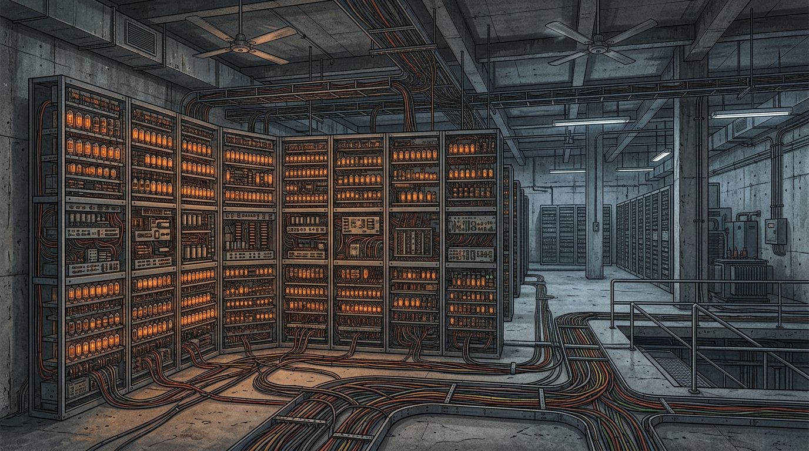
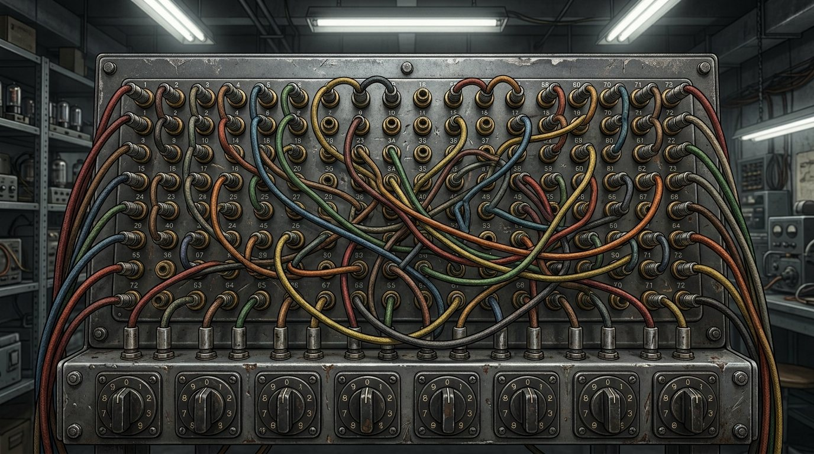
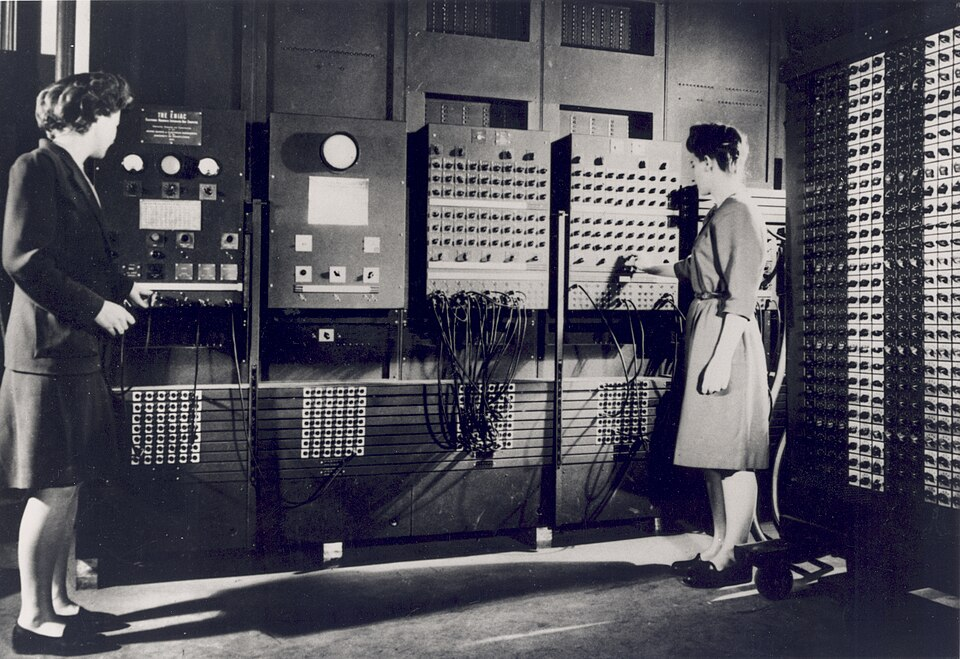

As primeiras máquinas que ligaram
O episódio anterior montou o computador inteiro no papel. Este é o canteiro de obras: 1936 a 1946, três máquinas que ligaram de verdade. Quando o áudio pedir, aperte Próximo.
O botão das imagens. Nas telas que têm as duas versões, a barra embaixo da foto troca entre a imagem real de época e a ilustração, que mostra o que a foto não mostra: a peça em corte, o que se mexe, a cena que ninguém fotografou.

Um interruptor que ninguém precisa apertar
O interruptor de parede falha no segundo item: alguém tem que estar ali. Sem uma peça que obedeça a outro circuito, uma porta lógica nunca comanda a próxima, e o projeto do papel não sai do papel.
O relé


Um eletroímã puxa uma lâmina de metal e o contato fecha o circuito. Já existia pronto desde o telégrafo, e era barato. O problema é a lâmina: ela se mexe, e mexer leva de 5 a 10 milésimos de segundo.
A válvula


Faz a mesma coisa, deixa ou não deixa a corrente passar, mas sem nada se mexendo. Por isso chaveia em milionésimos de segundo. O preço: esquenta, gasta energia e queima.
Dez mil vezes
A diferença não é de dobro nem de dez vezes: é de umas dez mil vezes. E essa medida, quantas vezes por segundo a peça liga e desliga, é a mesma que hoje aparece na etiqueta de qualquer computador.
Z3


Harvard Mark I


ENIAC

Programar era trocar a fiação


Não era escrever nada: era mudar cabo de painel e girar chave até a máquina ficar fisicamente montada pra aquela conta. Cinco mil somas por segundo, e três dias pra saber qual soma fazer.
As seis

Seis mulheres aprenderam a máquina por dentro sem manual, porque manual não existia, e por muito tempo foram tratadas como operadoras quando eram as únicas pessoas que sabiam fazer o ENIAC rodar.
O que as três tinham dentro
relés, cerca de 1 soma/s
programa no filme perfurado
decimal, 3 somas/s
programa na fita de papel
válvulas, 5.000 somas/s
programa no cabo e na chave
Nas três, o programa morava fora. Dentro só moravam os números, e a prateleira era minúscula. Armazenamento não existia: o que entrava vinha de fita ou cartão, o que saía era impresso, e a máquina esquecia tudo ao desligar.
1946
Três máquinas gigantescas funcionando, e nenhuma delas capaz de guardar a própria ordem. Enquanto a ordem estiver fora, trocar de tarefa é trabalho físico, e a máquina nunca pode olhar pra própria ordem.